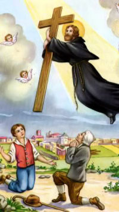

Tuesday, June the 8th, 2010
back to: title, date or indexes

His feast day is not until September, so there is no reason why I should be mentioning St Joseph of Cupertino today, other than mere whim. You can read about him here, to which I would add these observations from Some Human Oddities : Studies In The Queer, The Uncanny And The Fanatical by Eric John Dingwall (1947):
“At the age of eight it was reported that he had his first ecstasy : and his behaviour at school, where occasionally he used to sit agape and motionless and with his eyes raised to heaven, earned him the nickname of ‘Open Mouth’… he was admitted to the Capuchin Order in August 1620. At first he was destined to work in the refectory, but the result of his frequent fits of absence of mind and ecstatic states on the crockery was disastrous, and Joseph added to the irritation caused by his breakages by wearing the pieces round his neck… the accounts of his childhood, lack of education and later mental development suggest that he was not far from what today we should call a state of feeble-mindedness. Bishop Bonaventura Claver said that he was idiota.”